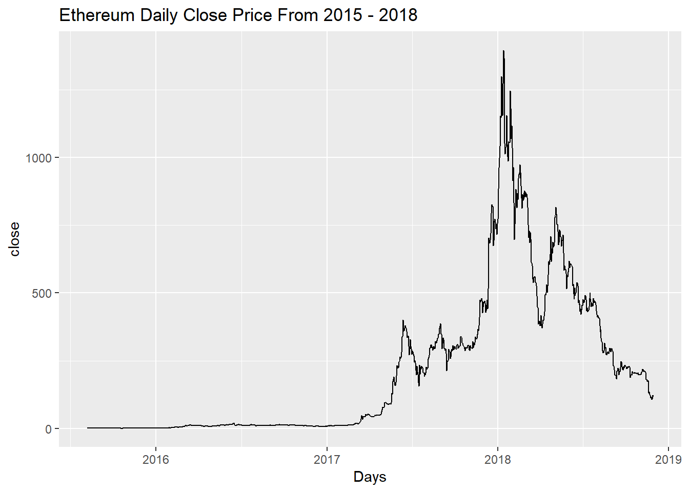
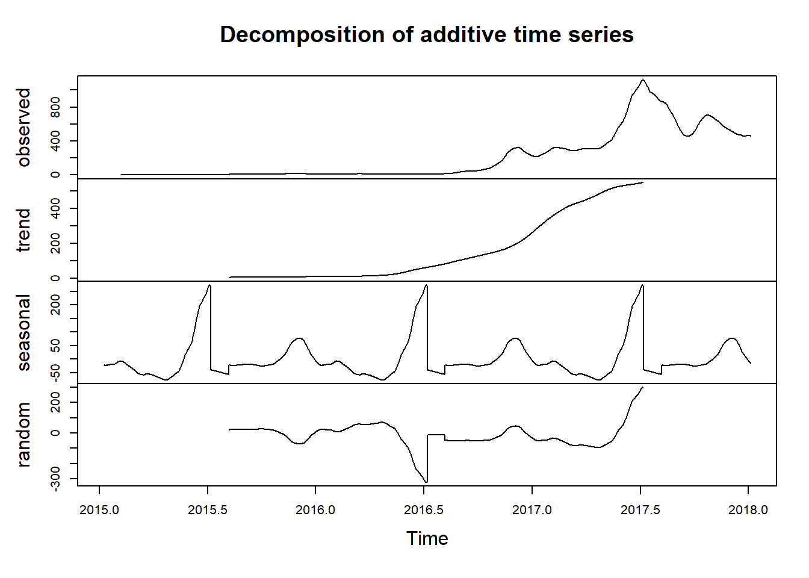
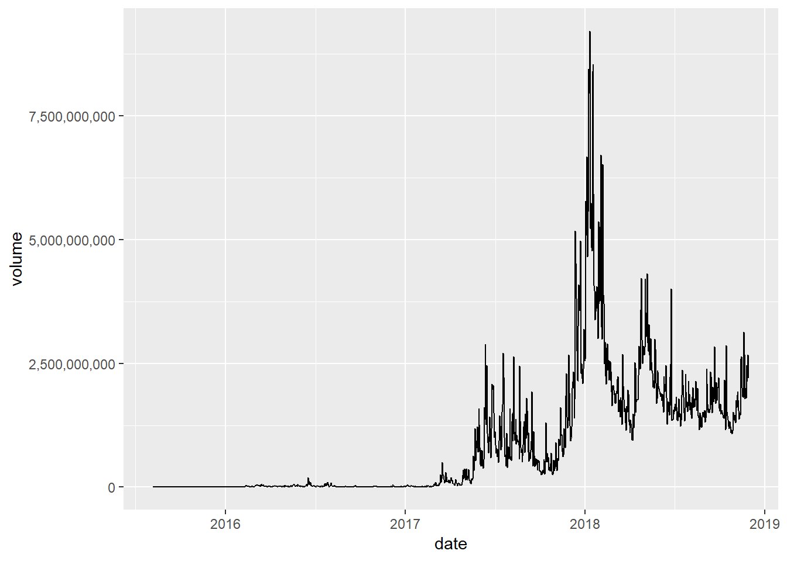

Ethereum Analysis
Yiwei Liao
5/21/2019
##INTRODUCTION Even though the cryptocurrency faze has gone, cryptocurrency trading is still a hot topic. Especially Ethereum, one of the soundest projects in the whole cryptocurrency world. Ethereum is not just a platform but also a programming language (Turing complete) running on a blockchain, helping developers to build and publish distributed applications.
The purpose of this tutorial is to examine daily market value of cryptocurrency Ethereum and determine if we can form any predictions and correctly hypothesize based on the data.
##GATHERING DATA The first step is downloading and importing the data that we will be analyzing. Download the dataset from the link: https://www.kaggle.com/jessevent/all-crypto-currencies
##PREPARATION Libraries to install: tidyverse tidyr stringr broom lubridate ggplot2 zoo
#TIDYING THE DATA
library(tidyverse)## Registered S3 methods overwritten by 'ggplot2':
## method from
## [.quosures rlang
## c.quosures rlang
## print.quosures rlang## Registered S3 method overwritten by 'rvest':
## method from
## read_xml.response xml2## -- Attaching packages --------------------------------- tidyverse 1.2.1 --## v ggplot2 3.1.1 v purrr 0.3.2
## v tibble 2.1.1 v dplyr 0.8.0.1
## v tidyr 0.8.3 v stringr 1.4.0
## v readr 1.3.1 v forcats 0.4.0## -- Conflicts ------------------------------------ tidyverse_conflicts() --
## x dplyr::filter() masks stats::filter()
## x dplyr::lag() masks stats::lag()library(stringr)
all_crypto <- read_csv("crypto-markets.csv")## Parsed with column specification:
## cols(
## slug = col_character(),
## symbol = col_character(),
## name = col_character(),
## date = col_date(format = ""),
## ranknow = col_double(),
## open = col_double(),
## high = col_double(),
## low = col_double(),
## close = col_double(),
## volume = col_double(),
## market = col_double(),
## close_ratio = col_double(),
## spread = col_double()
## )all_crypto %>%
head()## # A tibble: 6 x 13
## slug symbol name date ranknow open high low close volume
## <chr> <chr> <chr> <date> <dbl> <dbl> <dbl> <dbl> <dbl> <dbl>
## 1 bitc~ BTC Bitc~ 2013-04-28 1 135. 136. 132. 134. 0
## 2 bitc~ BTC Bitc~ 2013-04-29 1 134. 147. 134 145. 0
## 3 bitc~ BTC Bitc~ 2013-04-30 1 144 147. 134. 139 0
## 4 bitc~ BTC Bitc~ 2013-05-01 1 139 140. 108. 117. 0
## 5 bitc~ BTC Bitc~ 2013-05-02 1 116. 126. 92.3 105. 0
## 6 bitc~ BTC Bitc~ 2013-05-03 1 106. 108. 79.1 97.8 0
## # ... with 3 more variables: market <dbl>, close_ratio <dbl>, spread <dbl>ethereum_df <- all_crypto%>%
filter(name == "Ethereum")
ethereum_df%>%head()## # A tibble: 6 x 13
## slug symbol name date ranknow open high low close volume
## <chr> <chr> <chr> <date> <dbl> <dbl> <dbl> <dbl> <dbl> <dbl>
## 1 ethe~ ETH Ethe~ 2015-08-07 3 2.83 3.54 2.52 2.77 1.64e5
## 2 ethe~ ETH Ethe~ 2015-08-08 3 2.79 2.8 0.715 0.753 6.74e5
## 3 ethe~ ETH Ethe~ 2015-08-09 3 0.706 0.880 0.629 0.702 5.32e5
## 4 ethe~ ETH Ethe~ 2015-08-10 3 0.714 0.730 0.637 0.708 4.05e5
## 5 ethe~ ETH Ethe~ 2015-08-11 3 0.708 1.13 0.663 1.07 1.46e6
## 6 ethe~ ETH Ethe~ 2015-08-12 3 1.06 1.29 0.884 1.22 2.15e6
## # ... with 3 more variables: market <dbl>, close_ratio <dbl>, spread <dbl>Now we gather all the historic data about Ethereum, we need to pick the needed columns to analyze.
ethereum_tidy<-ethereum_df%>%
select(name,date,open,close,high,low,market,volume)
ethereum_tidy## # A tibble: 1,211 x 8
## name date open close high low market volume
## <chr> <date> <dbl> <dbl> <dbl> <dbl> <dbl> <dbl>
## 1 Ethereum 2015-08-07 2.83 2.77 3.54 2.52 166610555 164329
## 2 Ethereum 2015-08-08 2.79 0.753 2.8 0.715 45486894 674188
## 3 Ethereum 2015-08-09 0.706 0.702 0.880 0.629 42399573 532170
## 4 Ethereum 2015-08-10 0.714 0.708 0.730 0.637 42818364 405283
## 5 Ethereum 2015-08-11 0.708 1.07 1.13 0.663 64569288 1463100
## 6 Ethereum 2015-08-12 1.06 1.22 1.29 0.884 73645011 2150620
## 7 Ethereum 2015-08-13 1.22 1.83 1.97 1.17 110607192 4068680
## 8 Ethereum 2015-08-14 1.81 1.83 2.26 1.75 110672322 4637030
## 9 Ethereum 2015-08-15 1.8 1.69 1.88 1.57 102303608 2554360
## 10 Ethereum 2015-08-16 1.68 1.57 1.7 1.09 94901005 3550790
## # ... with 1,201 more rowsBy extracting the essential data, I found out that most of the data is tidy.
#EXPLORATORY DATA ANALYSIS Now than our data is tidy, I plot the basic line based on daily close price in relation to date.
ethereum_tidy %>%
ggplot()+
geom_line(aes(x=date,y=close))+
xlab("Days")+
ylab("close")+
ggtitle("Ethereum Daily Close Price From 2015 - 2018")
From the graph we obviously observe that at the end of 2017 to the start of 2018 is the year where Ethereum had its first huge price boost. Our goal here is to analyze why this would happen and determine how important these factors are.
Let’s look at decomposition of the date to see if any other trends occur. For this purpose, we’ll be using decomposition method, see more details here: https://www.rdocumentation.org/packages/stats/versions/3.6.0/topics/decompose However, to do decomposition we must first go over a metric used in stock prediction called moving averages. Moving averages are averages calculated over a defined number of time periods for example in the code below we determine the moving averages(monthly)over the course of Ethereum’s trading history. More info about moving average: https://www.investopedia.com/terms/m/movingaverage.asp
library(zoo)##
## Attaching package: 'zoo'## The following objects are masked from 'package:base':
##
## as.Date, as.Date.numericethereum_tidy_2 <-ethereum_tidy %>%
#create a column for 30-day moving average
mutate(mov_avg = rollmean(ethereum_tidy$close,30,fill = NA, align = "right"))%>%
select(name,date,open,close,high,market,low,mov_avg,volume)We know can compare moving average entries with basic data entries through line plot
ethereum_tidy_2 %>% ggplot(aes (x = date),color= factor() )+
geom_line(aes(y=close),color = 'black') +
geom_line(aes(y=mov_avg),color='blue') +
xlab("date") +
ylab("price in US dollars") +
ggtitle("Moving Average Comparison")## Warning: Removed 29 rows containing missing values (geom_path). As we can see from the graph, black line represents daily data and blue represent monthly data growth. Towards the end of 2017, black line is above the blue line which means the daily growth is much faster than the monthly growth.
As we can see from the graph, black line represents daily data and blue represent monthly data growth. Towards the end of 2017, black line is above the blue line which means the daily growth is much faster than the monthly growth.
#here we are generating a time series, for daily entries, our frequency here is 365.
x <- ts(ethereum_tidy_2$mov_avg,start=c(2015,8),end=c(2018,5),frequency = 365)
#use dcompose method and plot the graph
de <- decompose(x)
plot(de) Observed from the decomposition graph, the trend is increasing over time. I also noticed the cyclic seasonality of the trend. But simply observe the trend over time isn’t that useful when it comes to something as volatile as the price of cryptocurrency, We must also look at other factors.
The plot indicates that there may be a correlation between price and other factors out there, maybe the volume?
ethereum_tidy_2 %>%
ggplot(aes(x=date,y=volume))+
geom_line() +
##formatting to display correct labels
scale_y_continuous(labels = scales::comma) Clearly from the graph, there is a similarity between the volume and the closing price.
##LINEAR REGRESSION MODEL ANALYSIS To show whether there is a correlation betwen volume and closing price, we are going to build a linear regression model, which is a good method to test the correlation between two factors.
Null hypothesis: There is no correlation between volume and closing price
lr <- lm(close~volume,data =ethereum_tidy_2)
broom::tidy(lr)## # A tibble: 2 x 5
## term estimate std.error statistic p.value
## <chr> <dbl> <dbl> <dbl> <dbl>
## 1 (Intercept) 46.3 4.67 9.92 2.33e-22
## 2 volume 0.000000196 0.00000000309 63.3 0.According to the data, there is an increase of price per year and there is an increase of about 4.629297e+01 in close price per volume trade increase. Because there is an increase of volume by 1.955865e-07 with respect of close price, p value is zero, thus we reject it.
We would also like to fit a linear regression model for moving average with volume Null hypothesis: There is no correlation between volume and moving average
lr2 <- lm(mov_avg ~ volume,data=ethereum_tidy_2)
broom::tidy(lr2)## # A tibble: 2 x 5
## term estimate std.error statistic p.value
## <chr> <dbl> <dbl> <dbl> <dbl>
## 1 (Intercept) 59.1 5.57 10.6 3.39e- 25
## 2 volume 0.000000180 0.00000000364 49.4 1.29e-289From the outcome, there is an increase of about 5.913842e+01 in moving average per volume trade increase. Because there is an increase of volume by 1.800868e-07 with respect of moving average,and p value is 1.286342e-289, thus we reject it.
More information about broom::tidy() and how to interpret the outcome: https://cran.r-project.org/web/packages/broom/vignettes/broom.html
As we build two linear regression models, we would also like to see how well tow models fit the data. I decided to Use the anova function to perform an F-test that compares two models.
More information about F-test and anova function can be found in these links: https://www.statmethods.net/stats/anova.html https://www.rdocumentation.org/packages/stats/versions/3.6.0/topics/anova
lr_f<-anova(lr)
lr2_f<-anova(lr2)
lr_f## Analysis of Variance Table
##
## Response: close
## Df Sum Sq Mean Sq F value Pr(>F)
## volume 1 71875663 71875663 4009 < 2.2e-16 ***
## Residuals 1209 21675452 17928
## ---
## Signif. codes: 0 '***' 0.001 '**' 0.01 '*' 0.05 '.' 0.1 ' ' 1lr2_f## Analysis of Variance Table
##
## Response: mov_avg
## Df Sum Sq Mean Sq F value Pr(>F)
## volume 1 60234119 60234119 2441.6 < 2.2e-16 ***
## Residuals 1180 29110343 24670
## ---
## Signif. codes: 0 '***' 0.001 '**' 0.01 '*' 0.05 '.' 0.1 ' ' 1By looking at the table, because the residual sum in the mov_avg - volume model is smaller (1180), it indicates that it does a better job of fitting the estimate to the actual data then just using the close price data with the volume as a variable, where residual sum is larger (1209).
ethereum_tidy_2 %>%
ggplot(aes(x=volume,y=mov_avg)) +
geom_point() +
geom_smooth(method =lm) +
scale_colour_gradient(low = "black", high ="blue")+
scale_x_continuous(labels = scales::comma) +
ggtitle("moving average over volume")## Warning: Removed 29 rows containing non-finite values (stat_smooth).## Warning: Removed 29 rows containing missing values (geom_point).
By looking at the graph, it indicates that there is definitely a correlation between volume and moving average, also the blue fitted line has a nonzero slope, which in suggests that changes in the volume are associated with changes in the moving average. However, fitted line plots can only display the results from simple regression, which is one predictor variable and the response.
summarized_lr2 <- lr2%>%summary()
summarized_lr2##
## Call:
## lm(formula = mov_avg ~ volume, data = ethereum_tidy_2)
##
## Residuals:
## Min 1Q Median 3Q Max
## -876.46 -58.32 -50.21 58.23 563.24
##
## Coefficients:
## Estimate Std. Error t value Pr(>|t|)
## (Intercept) 5.914e+01 5.572e+00 10.61 <2e-16 ***
## volume 1.801e-07 3.645e-09 49.41 <2e-16 ***
## ---
## Signif. codes: 0 '***' 0.001 '**' 0.01 '*' 0.05 '.' 0.1 ' ' 1
##
## Residual standard error: 157.1 on 1180 degrees of freedom
## (29 observations deleted due to missingness)
## Multiple R-squared: 0.6742, Adjusted R-squared: 0.6739
## F-statistic: 2442 on 1 and 1180 DF, p-value: < 2.2e-16We must also check the p-value which is significantly less than the standard significance level at 0.05.
Therefore, we can say there is a correlation between volumn and moving average.
##CONCLUSION Overall, this document introduces the baisc concepts of data manipulation and performing hypothesis testing. I am able to determine the correlation between volume and the moving average. The increase in volume affected the moving average as there was a crazy rise in price of Ethereum starting at the second half of 2017.
##Reference Dataset:https://www.kaggle.com/jessevent/all-crypto-currencies Data decomposition: https://www.rdocumentation.org/packages/stats/versions/3.6.0/topics/decompose Moving average:https://www.investopedia.com/terms/m/movingaverage.asp Broom documentation: https://cran.r-project.org/web/packages/broom/vignettes/broom.html Anova: https://www.statmethods.net/stats/anova.html ‘anova’ documentation: https://www.rdocumentation.org/packages/stats/versions/3.6.0/topics/anova